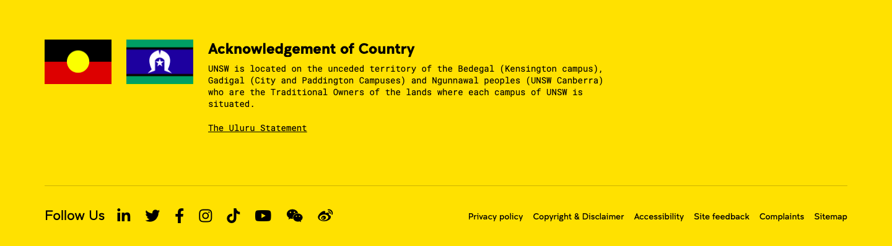
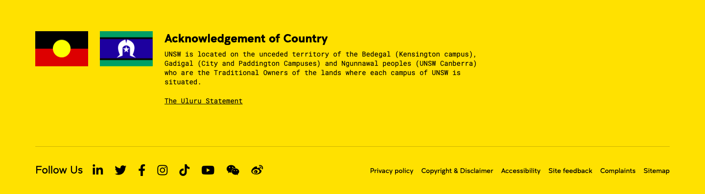

Visit our COVID-19 website for the latest on UNSW's response to COVID-19.
class="video-and-text__content">
Will you be a 10 Minute Genius?
Hear from UNSW's thinkers, dreamers and envelope pushers. In under 10 minutes, learn about the age of stars, the Indigenous Voice to Parliament, how to detect mutant algorithms, and more.
UNSW 2025 Strategy Progress Snapshot – learn how UNSW is achieving its goals for 2025 and leading in academic excellence, innovation and social impact
 
